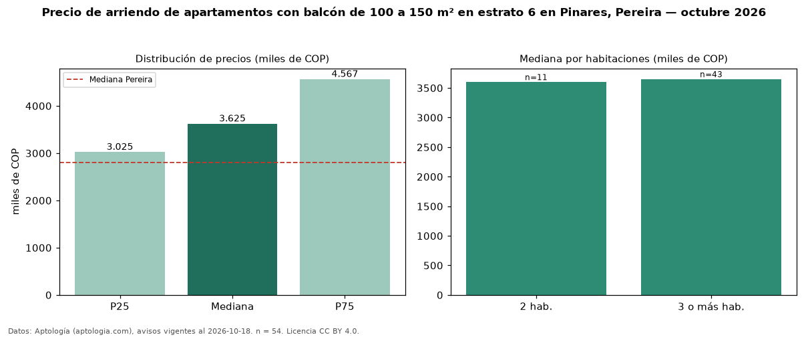

Precio de arriendo de apartamentos con balcón de 100 a 150 m² en estrato 6 en Pinares, Pereira — octubre 2026
Con 54 avisos vigentes, el canon mediano de apartamentos con balcón de 100 a 150 m² en estrato 6 en arriendo en Pinares, Pereira es COP 3,62 millones al mes. Prácticamente coincide con la mediana de los apartamentos con balcón en estrato 6 en arriendo de Pinares (COP 3,65 millones, n = 189); este segmento reúne el 29 % de esos avisos. Por metro cuadrado, la mediana es COP 30.433/m² al mes (n = 54), 13 % por debajo de los apartamentos con balcón en estrato 6 en arriendo de Pinares (COP 35.000/m²). El área mediana anunciada es 122 m². El segmento con más oferta es el de 3 o más habitaciones (43 avisos, mediana COP 3,65 millones); pasar de 2 habitaciones a 3 o más habitaciones cambia la mediana +1 %. La administración mediana declarada es COP 543.500 al mes (n = 26), aparte del canon. La mediana de todos los apartamentos en arriendo de Pereira es COP 2,80 millones (+29 % de diferencia). La mitad central de los avisos va de COP 3,02 millones a COP 4,57 millones (razón 1,5), una dispersión moderada. Datos: Aptología (aptologia.com), CC BY 4.0 — https://www.aptologia.com/arriendo/pereira/pinares. Archivos: PDF, CSV con las cifras y gráfica PNG.

| Avisos únicos | 54 |
|---|---|
| Percentil 25 | COP 3.025.000 |
| Mediana | COP 3.625.000 |
| Percentil 75 | COP 4.567.250 |
| Mediana por m² | COP 30.432 |
Fuente: avisos vigentes de portales inmobiliarios recopilados por Aptología, deduplicados (mínimo 30 avisos únicos por celda). Precios pedidos, no cerrados. Fecha: 2026-10-18.